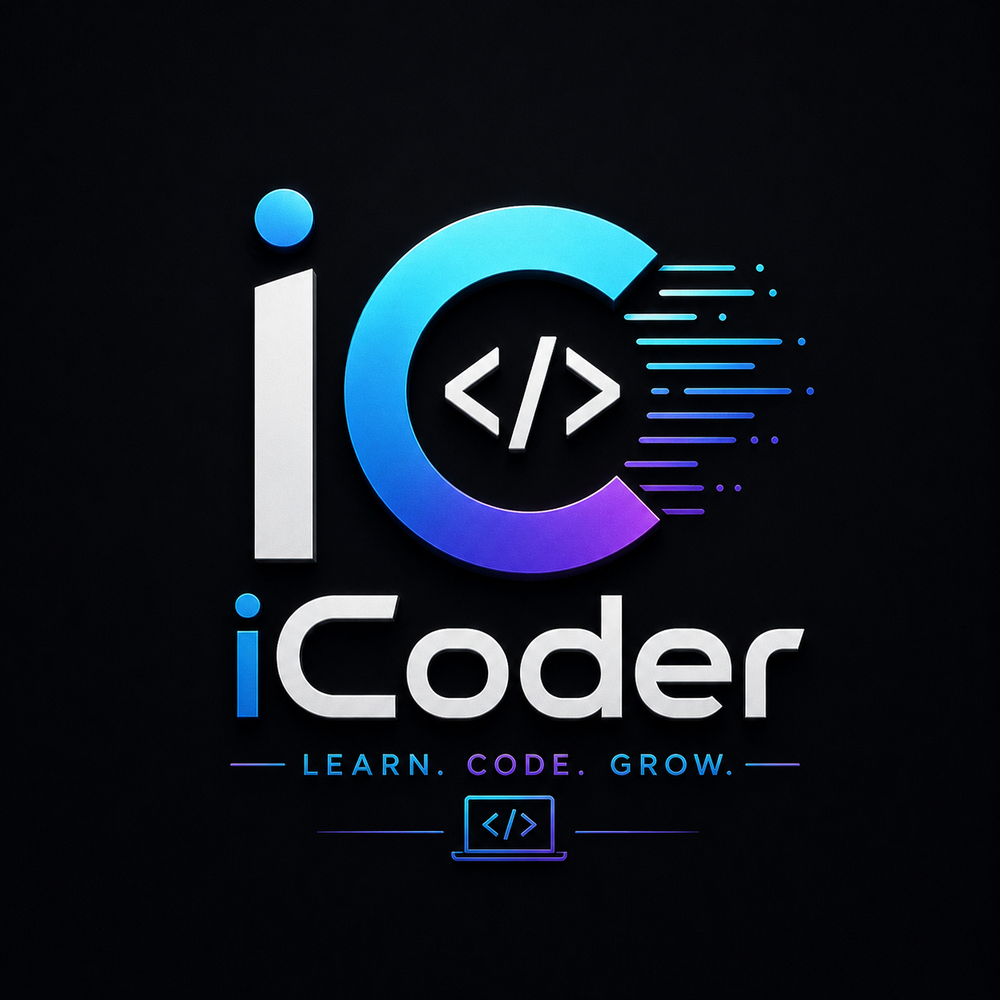

Web Development
Learn how to build modern, responsive websites using HTML, CSS, and JavaScript. Start from basics and grow into a full-stack developer with real-world projects.

Programming Skills
Improve your coding logic and problem-solving skills with practical examples, coding exercises, and beginner-friendly explanations.

Carrer Growth
Get guidance on becoming a professional developer, building projects, and preparing for internships and job opportunities in tech.
The Abhinav I-coder Motive
I-Coder was created with a simple mission — to make coding easy and accessible for everyone. Many beginners struggle to find clear and practical resources while learning programming, so we built i-Coder to provide step-by-step guidance, real-world projects, and beginner-friendly tutorials. Our journey started with a passion for technology and web development. Over time, i-Coder became a platform where students and aspiring developers can learn, build, and grow their skills with confidence. We believe that anyone can become a developer with the right guidance and consistent practice.

About I-coder Learn .Build .Grow
I-Coder is a modern learning platform created for students, beginners, and tech enthusiasts who want to explore the world of programming and web development. Our goal is to make coding simple, practical, and enjoyable through easy-to-understand mb-4 tutorials, real-world projects, and hands-on learning experiences. At I-Coder, we believe that learning never stops. Whether you are building your first website, improving your programming skills, or preparing for a career in technology, we are here to guide you at every step. Learn new technologies, build creative projects, and grow into a confident developer with i-Coder.
What We Offer Everything you need to start
At I-Coder, we provide everything a beginner needs to begin their coding journey with confidence. From HTML, CSS, JavaScript, and Bootstrap tutorials to practical web development projects, our content is designed to be simple, interactive, and easy to follow. We also focus on problem-solving skills, responsive design, modern technologies, and real-world development practices that help learners gain hands-on experience. Whether you want to create websites, improve your coding knowledge, or prepare for a future in tech, i-Coder gives you the right tools and guidance to get started
Our Mission Your success is our goal.
Our mission at I-Coder is to empower students and beginners with the knowledge and confidence needed to succeed in the world of technology. We aim to make learning coding simple, practical, and accessible for everyone through clear explanations, hands-on projects, and step-by-step guidance. We believe that every learner has the potential to become a skilled developer with the right support and dedication. That s why I-Coder focuses on building real-world skills, encouraging creativity, and helping aspiring developers turn their ideas into reality.